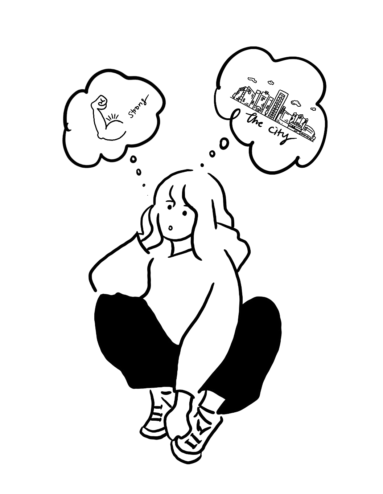
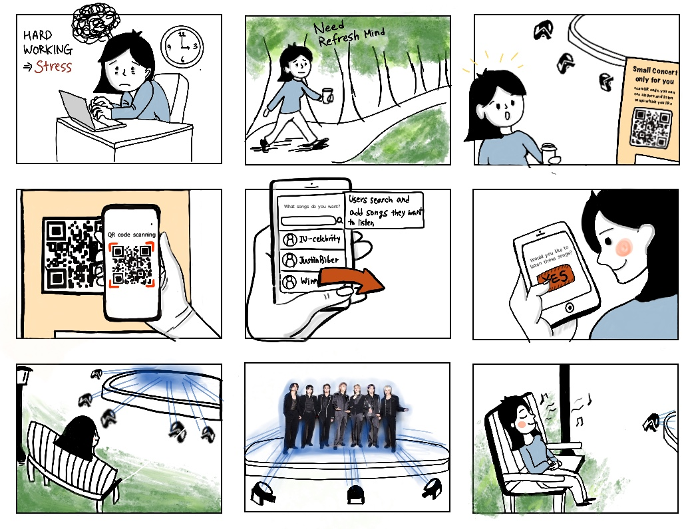

<!DOCTYPE html>
<html lang="en">

<head>
    <link href="css/project2.css" rel="stylesheet" />
    <meta charset="UTF-8" />
    <meta http-equiv="X-UA-Compatible" content="IE=edge" />
    <meta name="viewport" content="width=device-width, initial-scale=1.0" />
</head>

</html>

<body>
    <header>
        <div class="top_container">
            <nav>
                <div class="box_1">
                    <a href=./index.html>Portfolio</a>
                </div>
                <div class="box_2">Project</div>
                <div class="box_3">
                    <a href="./About_me.html">About</a>
                </div>
            </nav>
            <!--project name and cover of the page-->

            <div class="cover_element">
                <div class="text">
                    <h2 id="project_name">How Might we</h2>
                    <h3 id="project_name_2">"Make strong connection with the city"</h3>
                </div>
                
            </div>
        </div>
    </header>
    <main>
        <div class="container_2">
            <div class="subject_name">
                <h2>Step 1 diverging</h2>
                <p>Diverging is to bring ideas from my head.
                    Before deciding which ideas I chosse, thinking ideas as much as I can is most important. This
                    process created a new idea that I’ve thought before. </p>
            </div>
            <div class="idea_note">
                <!--group for 5 ideas-->
                <div class="idea1">
                    <span>01</span>
                    <span>Find mascots which hide somewhere</span>
                    <p>When people take a picture at the famous place in the city, mascot comes out in the photo farme.
                        Also people can collect mascots as a sticker collection. (The idea is derived from pokemongo)
                    </p>
                </div>
                <div class="idea2">
                    <span>02</span>
                    <span>Digital vistor’s book</span>
                    <p>Install big screen at the central of the city. People can draw and write whatever they want in
                        the screen.
                    </p>
                </div>
                <div class="idea3">
                    <span>03</span>
                    <span>Digital band orchestra</span>
                    <p>Install stage at the park and people scan QR code and then, write song they want to listen. Then,
                        the band or singer show up using AI technology. People can feel like to see concert.
                    </p>
                </div>
                <div class="idea4">
                    <span>04</span>
                    <span>Share messages, using touch screen</span>
                    <p>When people touch the some parts of the screen, the parts turn on the lights and make sounds.
                        Using parts, people can leave their messgage in the screen.
                        (The idea is derived from piano which is played by peoples’ foot)
                    </p>
                </div>
                <div class="idea5">
                    <span>05</span>
                    <span>Information desk at the central station of the city.</span>
                    <p>The information about city is made by people’s review. Through the desk, people get information
                        about the city such as historical place, delicious restaurants and bus stops. (The idea is
                        derived from unmanned information desks at the department store in Korea)
                    </p>
                </div>
            </div>
        </div>
    </main>
    <footer>
        <div class="container_3">
            <!--it include contents which locate at the bottom of the page-->
            <h2 class="subject_name_1"> Step 2 Evaluation Matrix as a converging </h2>
            <div class="matrix">
                
                <div class="subject_name_2">Final decision
                    <h5>Final choice is Al orchestra at the park. The idea markes high engaging, enjoyable and value.
                        When
                        citizen want to release their stress, the idea would be helpful them and then, they can think
                        the
                        city is good to live for them. Music is the best way to release anxious and stress. Also, park
                        makes
                        people to be calm and relaxed. Using Al technology, if people see their favorite singer as like
                        concert, they feel more fun. Therefore, the idea could be one reason which people want to live
                        the
                        city</h5>
                </div>
            </div>
            <div class="storyboard">
                <div class="subject_name_2"> Step 3 Story Board
                    <h5>In order to communicate a idea with others, make a story board. It helps others understanding
                        without verbal expression. Also, this method conveys a clear idea.</h5>
                </div>
                
            </div>
            <section class="marker">
                <!--the section part is add in the footer because of background-->
                <div class="marker__name">Ellie's</div>
                <div class="marker__state">Portfolio</div>
            </section>
        </div>
    </footer>
</body>